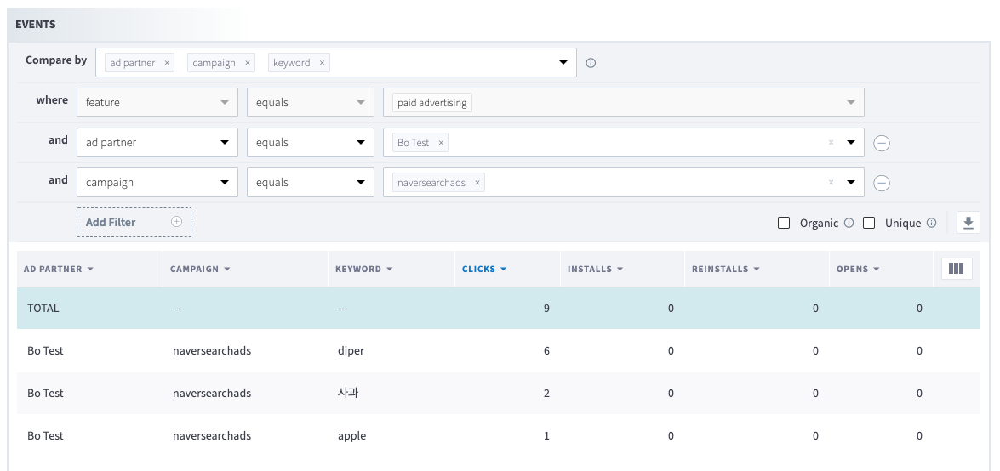

네이버 검색광고 가이드¶
- Author : Bo-hyung Son
- 업데이트: 2019년 10월 17일
1. 네이버 문서¶
2. 참고 사항¶
- 이 문서에서는 네이버에서 지원하는 방식중
URL 치환 변수를 이용하는 방법을 사용하는 방식으로 가이드를 드립니다. - 네이버의 경우 캠페인에 설정할 URL이 실제 랜딩할 URL과 일치해야 합니다.
3. 네이버 검색용 Branch Link 생성 하기¶
-
커스텀 Branch링크 도메인 설정
- 온보딩가이드를 참고하세요.
도메인 네임 구조
샘플 도메인네임
www.branch.io에서 Top-level도메인은io, Second-level도메인은branch, 서브도메인은www입니다.Top-level 도메인과 Second-level 도메인은 랜딩시킬 웹페이지의 도메인과 일치해야 합니다.
설정하신 커스텀 브랜치 도메인이
app.branch.io라면 랜딩페이지의 도메인은www.branch.io,landing.branch.io와 같은 것들이 가능합니다. -
대쉬보드에서 Ad Link 생성
- 현재
[Ads]-[Partner Management]페이지에 연동파트너인 Naver가 있지만 이것은 네이버 검색광고가 아니므로 신규 인터널 파트너를 생성 후 이 매체를 사용하는 것을 권장합니다. 원하시는 경우 Quick Link를 생성해도 무방합니다.https://ABCD.app.link/123456789?%243p=a_custom_123456789과 같은 형식의 Ad Link가 생성될것입니다.
- 생성된 Ad Link의
app.link도메인을 커스텀 도메인으로 변경합니다.https://app.branch.io/123456789?%243p=a_custom_123456789
- (선택사항) 캠페인 정보를 설정합니다. 예)
~campaign=naversearchads - 브랜치의 키워드 파라메터인
~keyword에 네이버측의 키워드 매크로인{keyword}를 설정합니다. 예)~keyword={keyword} - 네이버 검색광고 대쉬보드에 설정하실 Branch URL은 아래와 같습니다.
https://app.branch.io/123456789?%243p=a_custom_123456789&~campaign=naversearchads&~keyword={keyword}
- 예를들어 사용자가
diper를 검색했다면 아래와 같은 URL이 실제 호출될 것입니다.https://app.branch.io/123456789?%243p=a_custom_123456789&~campaign=naversearchads&~keyword=diper- 사용자가 한글로 검색하는 경우에 네이버에서 URL인코딩후 설정해 주므로 한글도 정상적으로 표시될 것입니다. 수작업으로 테스트시에는 한글을 그대로 설정하는 경우 한글이 깨져 보일수 있습니다.
- 현재
-
데이터 확인
- Activity Report에서 아래와 같이 데이터를 확인하실 수 있습니다. 